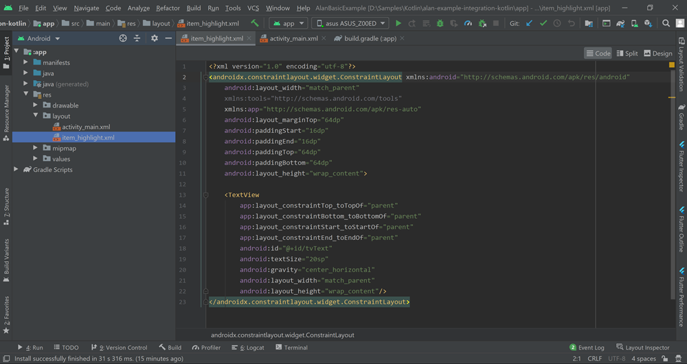
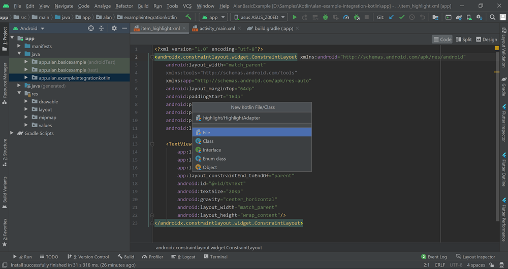
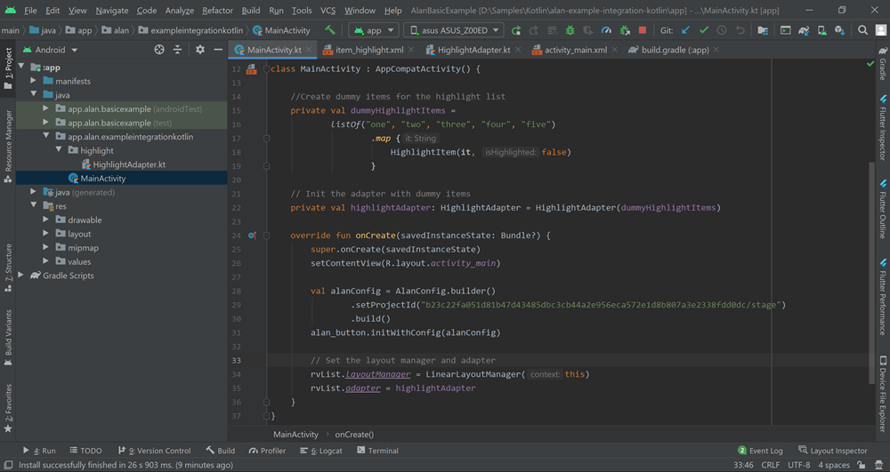
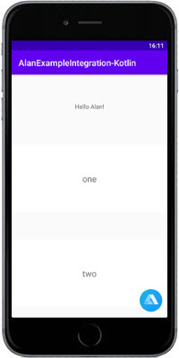

Highlighting items with voice (Kotlin)¶
When you add a voice assistant to an app, you create a multimodal interface. This interface supports several methods of interaction: in our case, voice and the UI.
In an app with a multimodal interface, it is always a good idea to accompany voice commands with some visual effects in the app (if this is possible). For example, if your app displays a list of items, you can add a voice command that will let the user check what items are on the list. And to support such a voice command visually, you can highlight each named item while Alan goes through the list.
In this tutorial, we will add a list of items to our app and create a voice command to go through this list with voice. When Alan names an item in the list, this item will be highlighted in the app UI.
What you will learn¶
How to go through the list of items with voice
How to accompany voice commands with visual effects in an app
How to use visual state to send custom data to the voice script
What you will need¶
For this tutorial, we will use the example Android app (Kotlin) integrated with Alan. To get the app: 1. Clone the Alan Android SDK repository to your computer:
git clone https://github.com/alan-ai/alan-sdk-android.git
Go to the app folder:
alan-sdk-android/examples/alan-example-integration-kotlin.Open the app in the IDE.
In the project, open the
MainActivity.ktfile and insetProjectId, replace the Alan SDK key with the key for your Alan Studio project:class MainActivity : AppCompatActivity() { override fun onCreate(savedInstanceState: Bundle?) { .... val alanConfig = AlanConfig.builder() .setProjectId("b23c22fa051d81b47d43485dbc3cb44a2e956eca572e1d8b807a3e2338fdd0dc/stage") .build() alan_button.initWithConfig(alanConfig) } }
Step 1: Add a list of items to the app¶
At this step, we need add a list of items to the main screen. We will create the items list with RecyclerView.
Let’s add a set of elements that will make the RecyclerView display our items:
First, add the RecyclerView Support Library to the project. In the project, open the
build.gradlefile and add the following import statement to thedependenciessection:dependencies { ... implementation "androidx.recyclerview:recyclerview:1.1.0" implementation 'app.alan:sdk:4.7.15' }
Tip
If necessary, update the Alan Android SDK version to the latest one. To get the version number, see the Releases section for the Alan Android SDK on GitHub.
Add the RecyclerView to the app layout. Open the
activity_main.xmllayout file and add the following section to it:... <androidx.recyclerview.widget.RecyclerView android:id="@+id/rvList" android:layout_marginTop="16dp" app:layout_constraintTop_toBottomOf="@id/tvTitle" app:layout_constraintStart_toStartOf="parent" app:layout_constraintEnd_toEndOf="parent" app:layout_constraintBottom_toBottomOf="parent" android:layout_width="0dp" android:layout_height="0dp"/> ...
We also need to position the RecyclerView relatively other elements on the screen. In the
TextViewlayout section, find the following line:app:layout_constraintBottom_toBottomOf="parent"
and replace it with:
android:id="@+id/tvTitle" android:layout_marginTop="64dp"
Now, the
Hello Alantext moves up, and theRecyclerViewthat will be holding the list of items is displayed below it.Next, we need to lay out items in the RecyclerView. To do this, we will create a new layout file. In the project tree, right-click the layout folder and select New > Layout Resource File. In the File Name field, enter item_highlight and click OK. Once the file is created, open it and replace its content with the following:
<?xml version="1.0" encoding="utf-8"?> <androidx.constraintlayout.widget.ConstraintLayout xmlns:android="http://schemas.android.com/apk/res/android" android:layout_width="match_parent" xmlns:tools="http://schemas.android.com/tools" xmlns:app="http://schemas.android.com/apk/res-auto" android:layout_marginTop="64dp" android:paddingStart="16dp" android:paddingEnd="16dp" android:paddingTop="64dp" android:paddingBottom="64dp" android:layout_height="wrap_content"> <TextView app:layout_constraintTop_toTopOf="parent" app:layout_constraintBottom_toBottomOf="parent" app:layout_constraintStart_toStartOf="parent" app:layout_constraintEnd_toEndOf="parent" android:id="@+id/tvText" android:textSize="20sp" android:gravity="center_horizontal" android:layout_width="match_parent" android:layout_height="wrap_content"/> </androidx.constraintlayout.widget.ConstraintLayout>
Here is what our project should look like:
Next, we will add the RecyclerView adapter to create the view holder for our items and handle the view logic. In the project, right-click the app node and select New > Kotlin File/Class. In the Name field, enter highlight/HighlightAdapter and press Enter on the keyboard.
Replace the content of the created file with the following:
package app.alan.exampleintegrationkotlin.highlihts import android.view.LayoutInflater import android.view.View import android.view.ViewGroup import androidx.recyclerview.widget.RecyclerView import app.alan.basicexample.R import kotlinx.android.synthetic.main.item_highlight.view.* data class HighlightItem( val text: String, var isHighlighted: Boolean ) class HighlightViewHolder(itemView: View) : RecyclerView.ViewHolder(itemView) { fun bind(item: HighlightItem) { itemView.tvText.text = item.text // Change the card background color if the item is highlighted if (item.isHighlighted) { itemView.setBackgroundColor(itemView.resources.getColor(R.color.colorPrimary)) } else { itemView.setBackgroundColor(itemView.resources.getColor(android.R.color.white)) } } } class HighlightAdapter( private val items: List<HighlightItem> ) : RecyclerView.Adapter<HighlightViewHolder>() { override fun onCreateViewHolder(parent: ViewGroup, viewType: Int): HighlightViewHolder { val view = LayoutInflater.from(parent.context).inflate(R.layout.item_highlight, parent, false) return HighlightViewHolder(view) } override fun getItemCount(): Int { return items.size } override fun onBindViewHolder(holder: HighlightViewHolder, position: Int) { holder.bind(items[position]) } fun turnHighlight(item: String): Int { val idx = items.indexOfFirst { it.text == item } // Remove highlighting from all items except the picked one items.forEachIndexed { index, highlightItem -> highlightItem.isHighlighted = index == idx } notifyDataSetChanged() return idx } }
Let’s have a look at the code above. Beside the view holder, here we have the
HighlightAdapterclass with theturnHighlight()function responsible for highlighting items in the list. We will call this function later from the voice command in the Alan script.The final step is to update our
MainActivity.ktfile. In theMainActivityclass, declare dummy items that will be displayed in the list and initialize the adapter with this data:class MainActivity : AppCompatActivity() { ... // Create dummy items for the list private val dummyHighlightItems = listOf("one", "two", "three", "four", "five") .map { HighlightItem(it, false) } // Init the adapter with dummy items private val highlightAdapter: HighlightAdapter = HighlightAdapter(dummyHighlightItems) ... }
In the
onCreate()function, add the following two lines to set the layout manager and adapter:class MainActivity : AppCompatActivity() { ... override fun onCreate(savedInstanceState: Bundle?) { super.onCreate(savedInstanceState) setContentView(R.layout.activity_main) ... // Set layout manager and adapter rvList.layoutManager = LinearLayoutManager(this) rvList.adapter = highlightAdapter } }
Run the app. You can how see the list of items added to the main screen filled with dummy items data.

Step 2: Send information about items to the voice script¶
In our voice command, we will name items available in the list. For this reason, we need to send information about these items to the Alan script. To do this, we will use Alan’s visual state.
In the project, open the MainActivity.kt file and in the onCreate() function of the MainActivity class, add the following:
...
override fun onCreate(savedInstanceState: Bundle?) {
...
// Send the visual state with items data to the script
val visualState = JSONObject()
val itemJsonArray = JSONArray()
dummyHighlightItems.forEach {
itemJsonArray.put(it.text)
}
visualState.put("items", itemJsonArray)
alan_button.setVisualState(visualState.toString())
}
Here we add items from the list to a JSON array and send this array to the voice script with the
setVisualState method of the Alan button. On the voice script side, we will access the items array by addressing the p.visual.items variable.
Step 3: Add a voice command to pass through the items list¶
Now let’s get back to Alan Studio and add the following voice command to our project:
intent(`List all available items`, p => {
let items = p.visual.items;
if (Array.isArray(items)) {
p.play(`The following items are available`);
for (let i = 0; i < items.length; i++) {
let item = items[i];
p.play({command: 'highlight', item: item});
p.play(`${item}`);
}
}
else {
p.play(`There are no items on this screen`);
}
});
Here is how this command works: when the user says: List all available items, Alan checks what our app has passed in visualState. If the p.visual.items variable contains an array of items, Alan plays back: The following items are available, sends the command to highlight the current item in the UI and names the item with voice. If the p.visual.items variable is empty, Alan plays back: There are no items on this screen.
You can test it: run the app and say: List all available items. Alan will name all items added to the list.
However, the items are not highlighted in the UI yet. We will add a command handler to highlight items at the next step.
Step 4: Add the command handler to the app¶
When the user says: List all available items, our app receives a set of commands to highlight current items. Let’s handle the highlight command on the app side and call the turnHighlight() function so
that a specific item is visually selected in the UI.
In the IDE, open the MainActivity.kt file and in the MainActivity class, inside the onCreate function, register the Alan callback to handle events received from the Alan voice script:
...
override fun onCreate(savedInstanceState: Bundle?) {
...
// Register the Alan callback to handle events from the Alan Studio script
alan_button.registerCallback(object : AlanCallback() {
// Register the command handler
override fun onCommandReceived(eventCommand: EventCommand?) {
super.onCommandReceived(eventCommand)
// Extract the command payload from the JSON object
val commandObject = eventCommand?.data?.optJSONObject("data")
val command = commandObject?.optString("command")
when (command) {
"highlight" -> {
// Extract the item to highlight and pass it to the adapter
val itemToHighlight = commandObject.optString("item")
val idx = highlightAdapter.turnHighlight(itemToHighlight)
rvList.scrollToPosition(idx)
}
else -> {
Log.d("Main", "Unknown command ${command}")
}
}
}
})
Now, when the app receives a command from the voice script, it triggers the onCommandReceived() function. The function extracts the command name from the passed JSON command object. If the command is highlight, the app gets the item name and calls the turnHighlight() function for this item; it also scrolls to the item position in the list.
You can test it: run the app and say: List all available items. Alan will name all items added to the list, the list will be scrolled down as Alan goes through it, and each named item will be highlighted.
What you finally get¶
After you pass through this tutorial, you will have an Android app with a list of items on the main screen and will be able to check what items are added to this list with voice.
You can get an example of such an app from the Alan GitHub to make sure you have set up your app correctly: Highlights tutorial branch for the Android Kotlin example app.